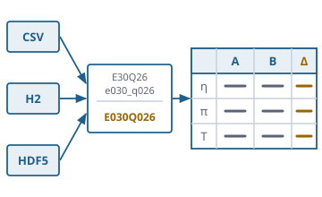

The operating-point report as a chain: source, dictionary, template, table
Function overview for the presentation of the envisionz framework, as of 28 Sep 2026. The core module of the operating-point report:
read calculation states from CSV, H2 and HDF5, unify names, convert units, assign cases to roles, form comparison and
expression columns and build a report grid that Word, Swing and the command line render the same way. No user interface.
For each method: purpose, API, use in the framework, applications, examples. The examples are shortened.
Many API names are German (e.g. Berichtslauf = report run, Vorlage = template, Einheitenschicht = unit layer, Befund = finding); they are shown unchanged.

.pdict, .src, .repPrinciples of the module
units.registry, framework-fileformats only in source.hdf5; the H2 driver is imported nowhere. A report from a CSV needs neither H2 nor HDF5, and a missing module does not bring down the ServiceLoader.The data model envisionz.reporttable.model
ParameterKey, DesignRef, CaseRef, Role, Value
A key is not a raw name: ParameterKey is a wrapper of its own and rejects lower-case letters and separators. A case carries its calculation state, so that case 3 of design A is not case 3 of design B. Value carries the unit (unknown, dimensionless or the source's unit) and lets NaN through – from the source it is a statement, such as “solver not converged”.
Methods
new ParameterKey("E030Q026");DesignRef.von(id),CaseRef.von(design, index),anzeige()Role.von(id)(rank, label)Value.zahl(n[, einheit]),zeichenkette(t),fehlt();istZahl(),istEndlich(),einheitUnbekannt(),dimensionslos()umgerechnet(zahl, einheit),mitEinheit(einheit)
Used in
What for
Addressing values of different calculation states unambiguously.
Names and parameter dictionary envisionz.reporttable.dict
NameNormalizer, Namensabbildung, NamenskollisionException
Three steps: remove separators, pad every digit group to a minimum width (default 3), upper-case with Locale.ROOT. E30Q26, E030Q026 and e030_q026 give the same key. Leading zeros are removed first, then padded; a longer group stays longer. Within one source, a second raw name on the same key aborts. Background, formulas and pseudocode →
Methods
new NameNormalizer([zifferbreite]),normalisiere(rohname)→ParameterKey,text(rohname)new Namensabbildung(quelle[, normalizer]),aufnehmen(rohname),rohname(key),kennt(key)NamenskollisionException:quelle(),schluessel(),ersterName(),zweiterName()
Used in
What for
Merging station identifiers from different programs and vintages.
Example – three spellings, one key
NameNormalizer n = new NameNormalizer();
n.normalisiere("e030_q026"); // E030Q026
n.normalisiere("E30Q26"); // E030Q026DictParser, ParameterDictionary, ParameterEntry, GroupEntry
The workspace-wide dictionary .pdict: display name, group, unit, decimal places, aliases (alternative raw names), quantity kind and the marking of the case column; groups with rank. Every entry remembers its line number. Five contradictions abort the build, and the message names both lines involved.
Methods
DictParser.lade(pfad, normalizer),parse(text, quelle, …)eintrag(key),eintragFuer(rohname),istAlias(key),gruppenNachRang(),parameterDerGruppe(id),caseKennungen()ParameterEntry:anzeigename(),stellenGesetzt(),istCaseKennung(),hatGruppe()
Used in
What for
Defining once what a quantity is called in the report, where it belongs and how precisely it appears.
Example – one entry in the .pdict (names illustrative, from the Javadoc)
[parameter E030Q026]
name : Wirkungsgrad Verdichter
gruppe : verdichter
einheit : -
stellen : 4
alias : ETACThe source layer envisionz.reporttable.source · .csv · .h2 · .hdf5
SourceSpec, SourceSpecParser, DataSource, DataSources, Fallspalte, Designaufteilung
A description .src per calculation state says how to read the file, nothing about the report. Unknown settings are checked by the provider, not the core. The case column in four steps: explicit setting, marking in the dictionary, first unknown column (only with a non-empty dictionary), otherwise the row number. A design column splits one file into several calculation states. Unassigned names keep their original spelling. Background, formulas and pseudocode →
Methods
SourceSpecParser.lade(pfad);SourceSpec:art(),etikett(),dateipfad(),angabe(name[, ersatz]),pruefeAngaben(erlaubt…)DataSources.standard(),mit(anbieter…),oeffne(spec, dict),oeffneAlle(spec, dict),uebergangen()DataSource:cases(),values(fall),unzugeordnet(),close()Fallspalte.waehle(...),designspalte(spec, dict);Designaufteilung.teile(ganz, spec, …);Spaltenkopf.deute("T30 [K]")
Used in
What for
Treating calculation states from different tools the same, whether CSV, database or HDF5.
Example – open all calculation states of a description
ParameterDictionary dict = DictParser.lade(Path.of("param.pdict"), new NameNormalizer());
for (DataSource q : DataSources.standard().oeffneAlle(SourceSpecParser.lade(Path.of("designA.src")), dict)) {
for (CaseRef c : q.cases()) System.out.println(c.anzeige() + ": " + q.values(c).size() + " values");
}CsvDataSource, H2DataSource, Hdf5DataSource and their providers
The three kinds behind the ServiceLoader. CSV reads the unit from the column header NAME [unit] – the same convention as in framework-data, deliberately reproduced rather than imported. H2 uses only java.sql; the driver is found at run time. HDF5 reads via the readers of framework-fileformats; datasets of deviating length are skipped and named, not truncated to the common length.
Methods
DataSourceProvider:kind(),open(spec, dict)CsvDataSourceProvider(csv),H2DataSourceProvider(h2),Hdf5DataSourceProvider(hdf5)caseSpalte(),design(),label();Hdf5DataSource.uebergangen()
Used in
What for
Performance calculations as CSV, merged measurement series in H2, simulation results in HDF5.
The unit layer envisionz.reporttable.units · .units.registry
Einheitenschicht, Einheitenrechner, Zieleinheiten, RegistryRechner, OhneUmrechnung
Sits between source and report builder, i.e. before the difference columns are formed. The source data are never overwritten; on switching, the computation starts again from the original. A percentage column with a reference value of zero yields KEIN_WERT with a reason. Without a registry nothing is guessed: OhneUmrechnung leaves every value as it is and considers only literally identical units comparable. RegistryRechner switches everything to SI, Imperial or RR via a profile. Background, formulas and pseudocode →
Methods
new Einheitenschicht(rechner, ziele),angleichen(key, wert),delta(key, neu, bezug),prozent(key, neu, bezug)Ergebnis(wert, befund, hinweis);Befund:UNVERAENDERT,UMGERECHNET,EINHEIT_UNBEKANNT,NICHT_VERGLEICHBAR,KEIN_WERTnew Zieleinheiten(dict),setze(key, einheit),fuer(key, ausQuelle)new RegistryRechner([registry]),belege(ziele, dict, profil),groessenart(einheit);OhneUmrechnung.DIE
Used in
What for
Reports in SI, Imperial or the RR system, without a difference arising from wrongly converted absolute values.
Example – everything in SI
Zieleinheiten ziele = new Zieleinheiten(dict);
RegistryRechner r = new RegistryRechner();
r.belege(ziele, dict, UnitProfile.si());
Einheitenschicht schicht = new Einheitenschicht(r, ziele);
Ergebnis d = schicht.delta(key, neu, bezug); // d.befund(), d.hinweis()The report template envisionz.reporttable.template
TemplateParser, ReportTemplate, RoleMapping, Zeilenwahl, Kennzahlregel, Vorlagenentwurf
A .rep file says which case plays which role – no values, no units, no labels. That is why it stays usable when the same calculation states are recomputed. Sections for report, designs, roles, mapping per calculation state, rows, pre-assignment via a key figure, and comparison. Paths are relative to the template. Vorlagenentwurf is the mutable version for the user interface; it never validates itself but writes the text and reads it back with the parser.
Methods
TemplateParser.lade(pfad),parse(text, quelle, basis)ReportTemplate:titel(),art(),quellen(),rollen(),zuordnung(),zeilen(),vergleich(),ausdruecke(),pruefeZuordnungen(etiketten)RoleMapping.setze(design, rolle, fallnummer),index(design, rolle),fallnummer(...)Vorlagenentwurf.von(vorlage),fall(design, rolle, fall),alsText(basis),vorlage(name, basis);Berichtsart:BLOCK,LISTE;Vergleichsart:AUS,DELTA,PROZENT
Used in
What for
Recurring comparisons of design states: the same template, new calculations.
Example – excerpt of a .rep (names illustrative, from the Javadoc)
[rollen]
rolle : Auslegungspunkt
rolle : Startfall
[zuordnung Design A]
Auslegungspunkt : 3
Startfall : 7
[vergleich]
art : delta
gegen : referenz
ausdruck : Promille = (wert - ref) / ref * 1000 stellen:1Expression columns envisionz.reporttable.formel
Formel and FormelException – a small reader of its own
Expressions for free comparison columns: numbers with a decimal point, + - * / ^ (right-associative), wert and ref for the row in the calculation state and in the reference, every other name a parameter of the same case, ref(NAME) in the reference, functions abs sqrt exp ln log10 min max. If a value is missing, the cell stays empty. An own reader instead of the EqnParser, because a framework module must not depend on the command-line layer. Background, formulas and pseudocode →
Methods
Formel.lies(text),rechne(belegung),parameter(),brauchtBezug()Formel.Belegung:wert(name, imBezug);Formel.Luecke– missing valueFormelException:ausdruck(),stelle(),grund()
Used in
What for
Deviations in per mille, normalised quantities, own key figures in the report.
Example – per mille against the reference
Formel f = Formel.lies("(wert - ref) / ref * 1000");
double p = f.rechne((name, imBezug) -> imBezug ? 0.861 : 0.866);Building the report envisionz.reporttable.build
Berichtslauf, ReportBuilder, Baubefund, Vorbelegung
Berichtslauf fixes the order once: read template, read dictionary, open sources, build, close sources – even if building fails, because an open H2 source would keep the file locked. ReportBuilder builds the grid from template, dictionary and open sources; a duplicate label aborts. The Baubefund collects what did not work out: unassigned names, missing mappings, rows without a value, units, expressions, pre-assignments.
Methods
new Berichtslauf(vorlagendatei),einheiten(schicht),fuerDesign(etikett),baue()→Grid,pruefe()new ReportBuilder(vorlage, dict, quellen),einheiten,fuerDesign,baue(),befund(),zuordnung()Baubefund:sauber(),anzahl(),text(),unzugeordnet(),zeilenOhneWert(),einheitenbefunde()Vorbelegung.wende(vorlage, dict, …)– pre-assign a role via a key figure
Used in
What for
Producing the finished report table from template and calculation states, together with a list of what is missing.
Example – the whole path in three lines
Berichtslauf lauf = new Berichtslauf(Path.of("vergleich.rep"));
Grid g = lauf.baue();
if (!lauf.befund().sauber()) System.out.println(lauf.befund().text());The report grid envisionz.reporttable.grid
Grid, GridColumn, GridRow, GridCell
The seam between the core and the output paths. Columns are values, differences, percentages or expressions; the reference of a comparison column is an index, not a label. The unit of a row knows three states. Invalid grids cannot even be created. alsText(Locale) fixes only the rounding; the placeholder for an empty cell is set by the output path. Background, formulas and pseudocode →
Methods
Grid(titel, spalten, zeilen),zelle(z, s),wertZeilen(),basisVon(s),zeilenOhneEinheit()GridColumn.wert(...),delta(…, basis),prozent(…, basis),ausdruck(…, basis)GridRow.gruppe(text),zeile(text, einheit, zellen)GridCell.zahl(wert, stellen),zeichenkette(t),leer(),alsText(locale)
Used in
What for
One report, three output paths with the same rounding: Word document, table in the window, CSV and text.
Example – one cell for display
String s = g.zelle(3, 1).alsText(Locale.GERMANY); // empty stays empty, the display sets the dashCommand line cmd.reporttable
CmdReportTable and Schalter
The report from template to CSV or aligned text, in the house format -name:wert. Without -aus the table goes to stdout. -pruefe reads everything and reports only the findings, including pre-assignments, and writes nothing. Return values for scripts: 0 done, 10 done with findings, 1 usage line, 2 switch error, 3 other error. The path to Word deliberately exists only in app-report.
Methods
CmdReportTable.main(args),fuehreAus(schalter, aus)→ return valuenew Schalter(args),hat(name),text(name, ersatz),pflichttext(name)
Used in
What for
Producing reports in batch runs; checking a template before anyone opens it in the window.
Examples
CmdReportTable -vorlage:bericht.rep -format:txt
CmdReportTable -vorlage:bericht.rep -aus:vergleich.csv -format:csv -trenner:;
CmdReportTable -vorlage:bericht.rep -pruefeUsage matrix in the framework
Which modules use which parts today, counted in the source code (excluding probes).
| Module | Model | Names / dictionary | Sources | Units | Template | Expressions | Report building | Grid | What for |
|---|---|---|---|---|---|---|---|---|---|
| app-report | ● | ● | ● | ● | ● | ● | ● | User interface of the operating-point report, Word output via GridToReport |